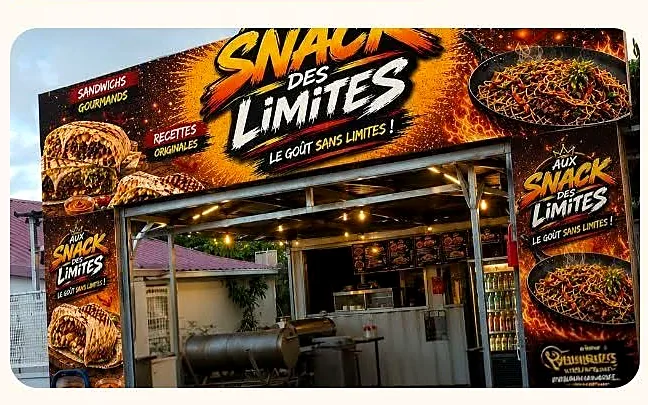
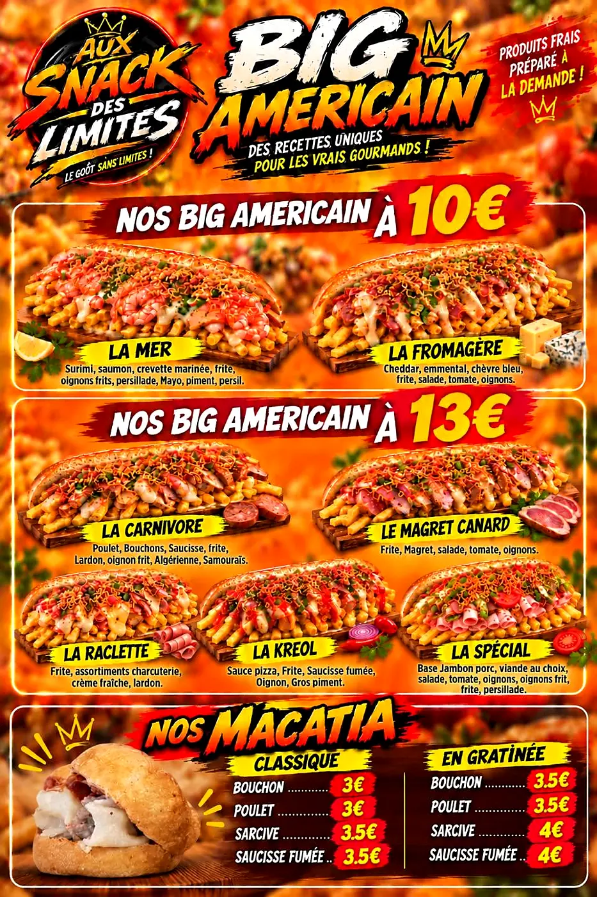
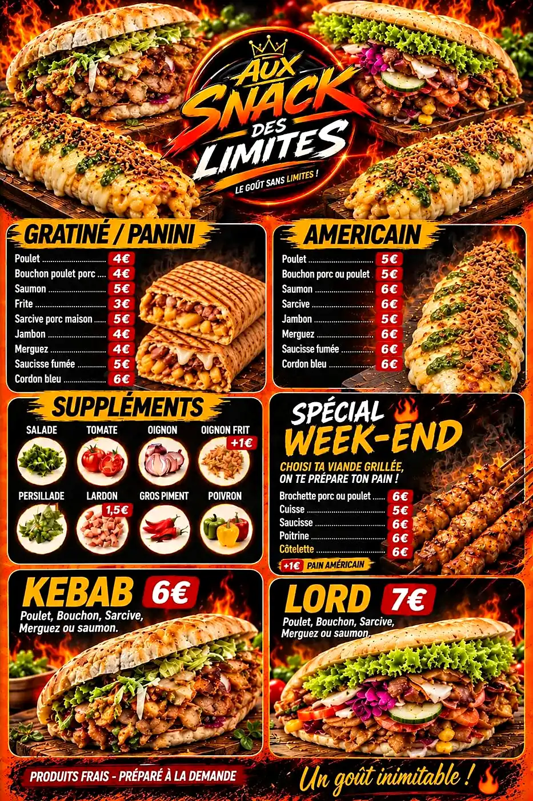
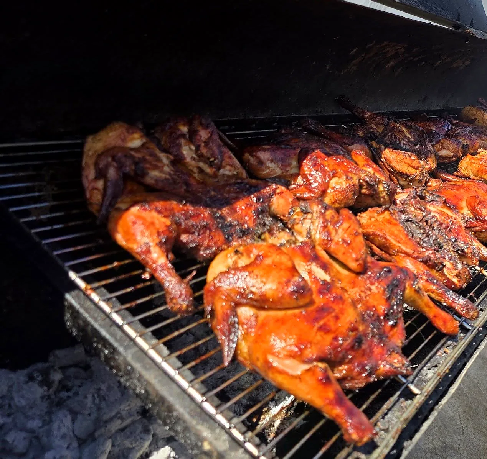

Vos papilles, notre priorité
Produits frais, préparés à la demande
Ruelle des Jacques à Bras-Panon, Aux Snack des Limites prépare tout à la demande, avec des produits frais : woks et riz cantonais, Big Américains généreux, gratinés, kebabs et macatias.
Et le week-end, place au grill : saucisses, ribs, poulet, cuisses désossées et brochettes.
Le tout à petits prix : « nous restons quand même parmi les moins chers de l'île ! »

Les affiches du snack
Le goût sans limites
Faites glisser →



Sur place, à emporter ou livré
Vos plats préférés, directement chez vous
Sandwichs gourmands, woks savoureux, grillades, frites, boissons : le snack livre aussi.
Une commande ? Un coup de fil au 0693 48 57 13 ou un message WhatsApp. Les jours de forte affluence, le snack conseille de commander tôt pour éviter l'attente.
Une famille de plus de 8 000 abonnés
Ils en parlent
« Les Américains t'es au top, à la prochaine »
Camel, commentaire Facebook (octobre 2026)
« 8 000 abonnés, c'est bien plus qu'un chiffre : c'est une famille qui grandit ! »
✦ Offrir pour Noël ✦
Menu Grill spécial fin d'année
Cette année, le snack vous prépare « du lourd » pour vos repas de fêtes : un menu grill spécial les 24 et 31 décembre, à partager en famille ou entre amis.
Pensez à réserver : commandes avant le 20 décembre. Le menu détaillé arrive très bientôt.
Nous trouver
Passer au snack
📍 23 ruelle des Jacques, 97412 Bras-Panon
📞 0693 48 57 13 (commandes)
Horaires
Horaires indiqués sur la page myQR du snack ; fermetures exceptionnelles annoncées sur Facebook.